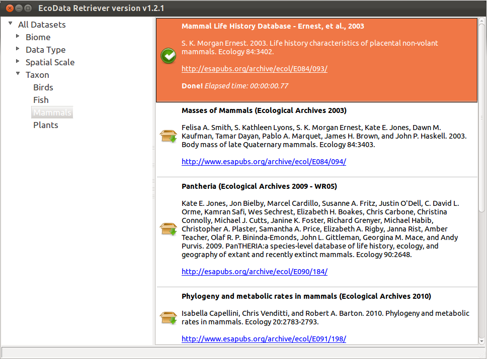

Download and Install Ecological Datasets
A weecology production.
Packages are provided for most operating systems, or you can install from the Python source.
Simply download and run retriever.exe. This can be run as a Windows application or from the command line using the command line interface.
A Debian package is provided; If you're on a non-Debian based system, refer to the instructions under Installing from Source.
A 32-bit Mac package is provided. Download retriever.zip, extract retriever.app, and run it. Note that the Mac package will only work in graphical mode; if you wish to use the command line interface, see the instructions under Installing from Source. Please note that we do not work with Macs and therefore testing and running down Mac specific bugs is difficult. If you'd like to help us make the Mac packages better, please get in touch. The most stable way to run the Retriever on Mac is to install it from source.
A source tarball is also available. To install the EcoData Retriever from source, you'll need:
On Ubuntu, the following command will install all required dependencies:
sudo apt-get install python-setuptools python-wxgtk2.8 python-xlrd
The following packages are optional:
To download and install the Retriever from source, use the following commands (Windows users should use a Unix-like environment such as Git bash or Cygwin):
wget https://github.com/weecology/retriever/raw/v1.4/retriever-src.tar.gztar -xvzf retriever-src.tar.gzcd srcsudo python setup.py installAfter installing, type retriever to launch.
The first time you launch the EcoData Retriever, it will automatically download all available Retriever scripts. You'll then be prompted to choose a database system and enter your connection information. Once this process is complete, you'll see the following screen:
You'll see each available dataset with citation information and a link to the dataset website. Click on the box icon to start downloading the data.
You can use the categories on the left to filter the data to show, for example, only data from a specific taxonomic group (like Mammals in the image above). You can also search for specific terms using Edit > Find.
If you need to change the database management system that you are using just select File > Connection from the menu.